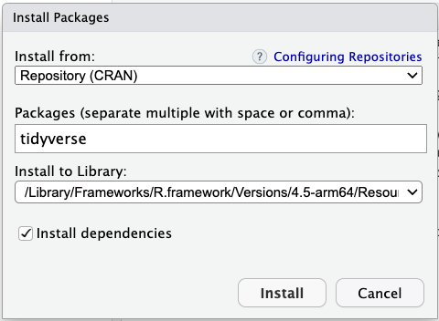
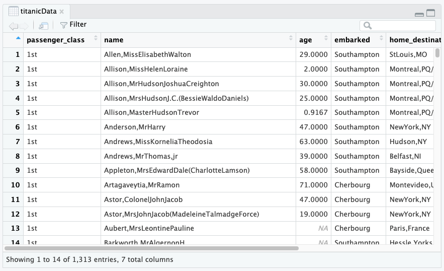
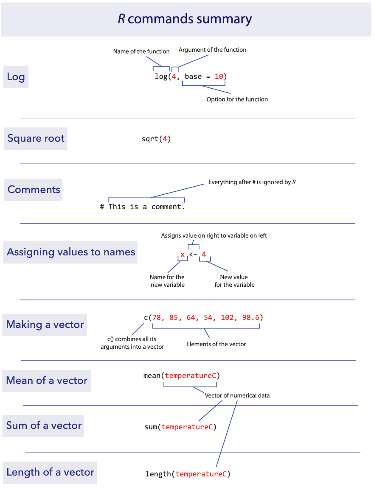

Labs using R: UBC Edition
Lab
2. Tabular data
This lab is part of a series designed for BIOL 300, based on The Analysis of Biological Data. The rest of the labs can be found here.
Learning outcomes
Make data files for R
Use data frames and tibbles
Learn how to increase the power of R with packages
Data, R scripts, and other resources for these labs can be downloaded
from here as a .zip file. Please open the
ABDLabs folder created by the .zip file in a
location on your computer that you can come back to use repeatedly.
Learning the tools
Structure of a good data file
Data files appear in many formats, and different formats are sometimes preferable for different tasks. However, there is one especially useful way to organize data for statistics and R, called “tabular data”.
The tabular format is actually very simple. Each row in the data set represents an individual or observational unit, and each column represents a variable measured on those individuals.
For example, here is a small data set about the tongue and palate lengths of several species of bats. In this data set, each row is one species of bat, and the columns contain the species name, palate length, and tongue length.
| species | palate_length | tongue_length |
|---|---|---|
| Lichonycteris obscura | 10 | 36.1 |
| Glossophaga comissarisi | 10.7 | 26.6 |
| Glossophaga soricina | 11.4 | 30.2 |
| Anoura caudifer | 11.6 | 36.7 |
| Hylonycteris underwoodi | 13.4 | 36.7 |
| Anoura geoffroyi | 13.8 | 39.6 |
| Lonchophylla robusta | 14.3 | 42.6 |
| Anoura fistulata | 12.4 | 85.2 |
| Anoura cultrata | 14.3 | 34.3 |
| Leptonycteris curosoae | 16 | 40.2 |
| Choeronycteris mexicana | 18 | 52.1 |
Recording metadata
Data have no value unless they can be correctly interpreted. It is important to record enough information that each variable in your data set can be well-understood by another reader (including your future self).
Key information includes the meaning of each variable name, including units, along with when, where and who collected the data. The objective here is to provide a short document that another person could read to unambiguously interpret your data file.
Creating a data file
When you have new data that you want to get into the computer in a
format that R can read, it is often easiest to do this outside of R. A
spreadsheet program like Excel (or a free alternative like Google
Sheets) gives a straightforward way to create a comma-separated values
file, or .csv, that R can read.
In your spreadsheet program, create a new blank workbook. In the first row of your new spreadsheet, write your variable names, one for each column. (Be sure to give them good names that will work in R. Mainly, don’t have any spaces in a variable name and make sure that it doesn’t start with a number or contain punctuation marks. See Lab 1 for more about naming variables.)
On the rows immediately below that first row, enter the data for each individual, in the correct column. Here’s what the spreadsheet would look like for the bat data after they are entered:

Saving as a .csv file
Saving a spreadsheet in a format that R can read is very
straightforward. In these labs, we are using .csv files.
Once you have made your spreadsheet, choose
File → Save as…. This will open a dialog box. First, give
the file a name with the extension .csv at the end. We used
“BatTongues.csv”.
Second, choose the folder in which you want to save the file. For any
data files we create for BIOL 300, save them in the
DataForLabs folder (DataForLabs should be
within your ABDLabs folder).
Third, select the correct format for the file: “Comma separated
values (.csv)”, which you can find in the dropdown next to
Format: in the dialog box. It might look something like
this:

In the resulting file, the first line will be a header that lists the names of each column (variable). After that there will be one line for each individual. All the variable names in the first row and the variable values in the later rows will be separated by commas, hence the name of the format.
If you followed what we did for all 3 steps, the relative file path
for the bat data would be something like this:
ABDLabs/DataForLabs/BatTongues.csv. If you opened the
.csv file in a text editor, it would look like this:
species,palate_length,tongue_length
Lichonycteris
obscura,10,36.1
Glossophaga comissarisi,10.7,26.6
Glossophaga
soricina,11.4,30.2
Anoura caudifer,11.6,36.7
Hylonycteris
underwoodi,13.4,36.7
Anoura geoffroyi,13.8,39.6
Lonchophylla
robusta,14.3,42.6
Anoura fistulata,12.4,85.2
Anoura
cultrata,14.3,34.3
Leptonycteris curosoae,16,40.2
Choeronycteris mexicana,18,52.1
All the information is there, and it is stored in a simple text file
that can be read again by Excel or R or many other programs. We strongly
recommend against hand-editing a .csv file in a text
editor, because it is very easy to mess up the formatting and make the
file unreadable by R. If you need to edit a .csv file, we
recommend that you open it in Excel or Google Sheets, make your edits,
and then save it again as a .csv file.
Installing packages
R has a lot of power in its basic form, but one of the most important parts about R is that it is expandable by the work of other people. These expansions are usually released in “packages”.
Each package needs to be installed on your computer only once, but to be used it has to be loaded into R during each session.
To install a package in RStudio, click on the Packages tab from the sub-window with tables for Files, Plots, Packages, Help, and Viewer. Immediately below that will be a button labeled “Install”—click that and a window will open.

In the second row (labeled “Packages”), type tidyverse
(without quotation marks). Make sure the box for “Install dependencies”
near the bottom is clicked, and then click the “Install” button at
bottom right.

Installing an R package only needs to be done once on a given computer. If installed correctly, the package wil permanently available from that point forward (though it will need to be loaded).
Loading a package
Once a package is installed, it needs to be loaded into R during a
session if you want to use it. You do this with a function called
library().
library()
For this lab, we will use functions from a couple packages within the
tidyverse. Before using the functions in these packages, we need to load
tidyverse. We do this with the library() function. In the
console, enter this:
If the tidyverse was is installed on your computer
correctly, the computer will show a brief status message and then will
be ready to go. If the package is not installed, it will give you an
error message in red asking you to install the package.
Setting the working directory
The files on your computers are organized hierarchically into folders, or “directories”. It is convenient in RStudio to tell R which directory to look for files at the beginning of a session, to minimize typing later.
For these labs, the best way to set your working directory is to
start R and Rstudio by clicking on the ABDLabs.Rproj file
in the ABDLabs directory. This will automatically load the
needed packages and set the working directory to this folder.
You can also manually set the working directory from RStudio’s menu
via Session → Set Working Directory → Choose Directory….
This will open a dialog box that will let you find and select the
directory you want. For BIOL 300 labs, use ABDLabs as your
working directory.
Reading a file
In these labs, we have saved the data in a comma-separated variable
(CSV) format. All files in this format ought to have .csv
as the end of their file name. A CSV file is a plain text file, easily
read by a wide variety of programs. Each row in the file (besides the
first row) is the data for a given individual, and for each individual
each variable is listed in the same order, separated by commas. It’s
important to note that you can’t have commas elsewhere in the file; they
function as the separators.
The first row of a CSV file should be a “header” row, which gives the names of each variable, again separated by commas.
read.csv()
For examples in this lab, let’s use a data set about the passengers
of the RMS Titanic. One of the data sets in the folder of data attached
to this lab is called titanic.csv. This is a data set of
1313 passengers from the voyage of this ship, which contains information
about some personal info about each passenger as well as whether they
survived the accident or not.
To import a CSV file into R, use the read.csv() function
as in the following command. (This assumes that you have set the working
directory to ABDLabs, as we described above.)
This looks for the file called titanic.csv in the folder
called DataForLabs. Here we have given the name
titanicData to the object in R that contains all this
passenger data. Of course, if you wanted to load a different data set,
you would be better off giving it a more apt name than “titanicData”.
The option stringsAsFactors = TRUE asks R to interpret the
columns with non-numerical information as “factor” with possibly
repeated instances of the same value of a categorical variable.
R has other functions that can read other data formats besides csv
files, but the function read.csv() requires that the file
be a csv file.
Finding files in other locations
For all of the examples in BIOL 300 labs, we assume that the data is
in a folder called DataForLabs and that folder resides in
the ABDLabs folder. When you work on a new data set outside
of these labs, you will want to store the data somewhere else. To import
data into R from another location on your computer, you need to know the
full file path for the file. For example, the file path to the titanic
file on my Mac is
“/Users/whitlock/Desktop/ABDLabs/DataForLabs/titanic.csv”. On a Windows
machine, it would look something like
“C:\Documents\ABDLabs\DataForLabs\titanic.csv”. In either case, this
file path describes a series of folders nested inside one another that
tells the computer where to look for the file.
By supplying the full address, you are telling
read.csv() to look for the file outside your current
working directory. Reading a file from any location can be done with
read.csv() like this:
titanicData <- read.csv("/Users/whitlock/Desktop/ABDLabs/DataForLabs/titanic.csv", stringsAsFactors = TRUE)A first look at data
To see if the data were imported appropriately and/or get a sense of
the characteristics of the data, the summary() and
View() commands can be useful.
summary()
This function will list all the variables and some summary statistics for each variable.
## passenger_class name age embarked home_destination sex survive
## 1st:322 Carlsson,MrFransOlof : 2 Min. : 0.1667 :493 :558 female:463 no :864
## 2nd:280 Connolly,MissKate : 2 1st Qu.:21.0000 Cherbourg :202 NewYork,NY : 65 male :850 yes:449
## 3rd:711 Kelly,MrJames : 2 Median :30.0000 Queenstown : 45 London : 14
## Abbing,MrAnthony : 1 Mean :31.1942 Southampton:573 Montreal,PQ : 10
## Abbott,MasterEugeneJoseph: 1 3rd Qu.:41.0000 Cornwall/Akron,OH: 9
## Abbott,MrRossmoreEdward : 1 Max. :71.0000 Paris,France : 9
## (Other) :1304 NA's :680 (Other) :648View()
The View() function is a nice way to see the data in a
spreadsheet-like format. To see the data in titanicData
with View(), run the following command:

Again, note that the titanicData object has 7 columns
and 1313 rows. The horizontal and vertical scroll bars will allow you to
see more of the data compared to what may initially appear in the
window.
Data frames and tibbles
In R, a data set is often stored as a data.frame or a
tibble. For now, you can think of these as very similar:
both store data in rows and columns (tabular data).
Each column contains one variable, such as age, sex, or survival. Each row contains one individual, such as one passenger on the Titanic. The values in a row belong together, so the first value in each column describes the same individual, the second value in each column describes the next individual, and so on.
The function read.csv() loads data into R as a
data.frame. The data set is usually given a name, which
lets us tell R which data set to use. For example, in the previous
section we read in a data set and called it titanicData.
This object contains information about passengers on the Titanic. It has
seven variables, so it has seven columns: passenger_class,
name, age, embarked,
home_destination, sex, and
survive.
Columns within data frames
Very importantly, we can grab one column from a data frame or tibble
by itself. We write the name of the data set, followed by a
$, and then the name of the variable.
For example, to show a list of the age of all the passengers on the Titanic, use
This will show a vector that has all the values for this variable age, one for each individual in the data set.
Adding a new column
Sometimes we would like to add a new column to a data frame. The
easiest way to do this is to simply assign a new vector to a new column
name, using the $.
For example, to add the log of age as a column in the
titanicData data frame, we can write
You can run the command head(titanicData) to see that
log_age is now a column in titanicData.
## passenger_class name age embarked home_destination sex survive log_age
## 1 1st Allen,MissElisabethWalton 29.0000 Southampton StLouis,MO female yes 3.36729583
## 2 1st Allison,MissHelenLoraine 2.0000 Southampton Montreal,PQ/Chesterville,ON female no 0.69314718
## 3 1st Allison,MrHudsonJoshuaCreighton 30.0000 Southampton Montreal,PQ/Chesterville,ON male no 3.40119738
## 4 1st Allison,MrsHudsonJ.C.(BessieWaldoDaniels) 25.0000 Southampton Montreal,PQ/Chesterville,ON female no 3.21887582
## 5 1st Allison,MasterHudsonTrevor 0.9167 Southampton Montreal,PQ/Chesterville,ON male yes -0.08697501
## 6 1st Anderson,MrHarry 47.0000 Southampton NewYork,NY male yes 3.85014760The head() function shows the first 6 rows of a data
frame or tibble, which is a handy way to check that you understand the
structure of the data and/or that you have added the new column
correctly.
Subsetting with filter()
Sometimes we want to do an analysis only on some of the data that fit certain criteria. For example, we might want to analyze the data from the Titanic using only the information from females.
The easiest way to do this is to use the filter()
function from the package dplyr. dplyr is a
package within the tidyverse, so make sure you have loaded tidyverse
into R using library(). libary(tidyverse) only
needs to be run once per session, and then you can use any of the
functions in the tidyverse packages, including
filter().
In the titanic data set there is a variable named sex,
and an individual is female if that variable has value
female. We can create a new data frame that includes only
the data from females with the following command:
This new data frame will include all the same columns as the original
titanicData, but it will only include the rows for which
the sex was female.
Note that the syntax here requires a double equal sign:
==. In R (and many other computer languages), the double
equal sign creates a statement that can be evaluated as
TRUE or FALSE, whereas a single equal sign may
change the value of the object to the value on the right-hand side of
the equal sign. Here we are asking, for each individual, whether
sex is female. We not assigning the value
female to the variable sex. So we must use a
double equal sign ==.
R commands summary

Activities & Questions
1. Install the tidyverse package on your system if
you haven’t already. After it has installed, use
library(tidyverse) to load it into your R environment.
2. In Lab 1, Question 7, you and your fellow students may have
recorded requested information about yourselves. Your TA will now
provide you with data sheets for all students in your section who took
measurements (all data are anonymous). Use the data sheets to create a
.csv file in Excel or Google Sheets. Include all of five of
the variables for each of the individuals in the data sheets. Be sure to
use variable names that are 1) legal in R and 2) intelligible to another
person who may encounter the file. Save the data file that you make in
the DataForLabs folder on your computer with the file name
CollectedDataFromLab1.csv.
Prepare a text file which describes each of the variables in the data file. Remember to list the meaning of each variable name, including units. The objective here is to provide a short document that another person could read to unambiguously interpret your data file.
Import this data file into R using
read.csv(), and give the resulting data frame a name that makes sense to you.Use the
View()function to check that you have read the data correctly.Use the
summary()function to determine the proportion of people in your tutorial section who are right-handed.
3. The data file called countries.csv in the
DataForLabs folder contains information about all the
countries on Earth. Each row is a country, and each column contains a
variable.
Use
read.csv()to read the data from this file into a data frame called countries.Use
summary()to get a quick description of this data set. What are the first three variables?Using the output of
summary(), how many countries are from Africa in this data set?What kinds of variables (i.e., categorical or numerical) are
continents,cell_phone_subscriptions_per_100_people_2012,total_population_in_thousands_2015andfines_for_tobacco_advertising_2014? (Don’t go by their variable names – look at the data in the summary results to decide.)Add a new column to your countries data frame that has the difference in ecological footprint between 2012 and 2000. What is the mean of this difference? (Note: this variable will have “missing data”, which means that some of the countries do not have data in this file for one or the other of the years of ecological footprint. By default, R doesn’t calculate a mean unless all the data are present. To tell R to ignore the missing data, add an option to the
mean()command that saysna.rm=TRUE. We’ll learn more about this later.)
4. Using the countries data again, create a new
data frame called AfricaData via the filter()
function, that only includes data for countries in Africa. What is the
sum of the total_population_in_thousands_2015 for this new
data frame?